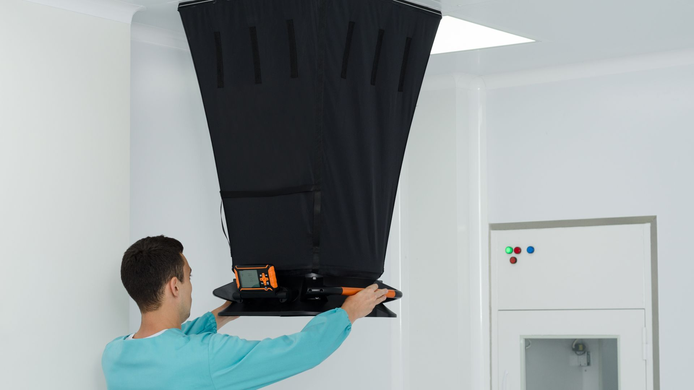

HVAC Commissioning and Air Balancing
Maple AccuTest provides professional HVAC commissioning and air balancing services to ensure building systems operate safely, efficiently, and in full compliance with design specifications and applicable standards.
We specialize in delivering accurate airflow measurement and adjustment, system optimization, and performance verification for new construction, renovations, and existing buildings. Our services help owners, engineers, and contractors achieve proper air quantity, thermal comfort, and energy efficiency.
Our commissioning and balancing service includes:
- Supply, exhaust, fresh, and return airflow testing and adjustment, such as diffuser, fans, grilles
- Performance testing and verification on main equipment
- HVAC system performance troubleshooting
- Final air balancing reports provided for city or municipal inspection
We take a detail-oriented and project-specific approach, tailoring our testing and balancing services to meet the exact requirements of your design, code, and operational needs.
Frequently Asked Questions
You may need air balancing if you notice uneven temperatures, weak airflow in certain rooms, noisy vents, or higher‑than‑expected energy bills. In commercial or multi‑unit buildings, inconsistent comfort levels or frequent HVAC complaints are strong indicators. Contractors often request balancing after new installations or renovations to verify proper performance.
In most cases, yes. Air balancing identifies whether airflow is being delivered correctly to each room. If the issue is caused by airflow imbalance, duct restrictions, or incorrect system settings, balancing can significantly improve comfort. If the problem is caused by insulation or building envelope issues, we’ll point that out in the report.
Not always. Many systems only need minor adjustments such as damper tuning, register adjustments, or correcting airflow distribution. If we find issues like duct blockages, undersized returns, or equipment limitations, we’ll include clear recommendations in the report so you can decide on next steps.
Not at all. The process is clean, quiet, and non‑invasive. We simply take measurements at each vent and inspect the system. There’s no cutting, drilling, or construction involved. Most homeowners continue their day as usual while we work.
Yes. When airflow is properly balanced, your HVAC system doesn’t have to work as hard to heat or cool the space. This can reduce energy consumption, extend equipment lifespan, and improve overall system efficiency — especially in older homes or buildings with uneven airflow.